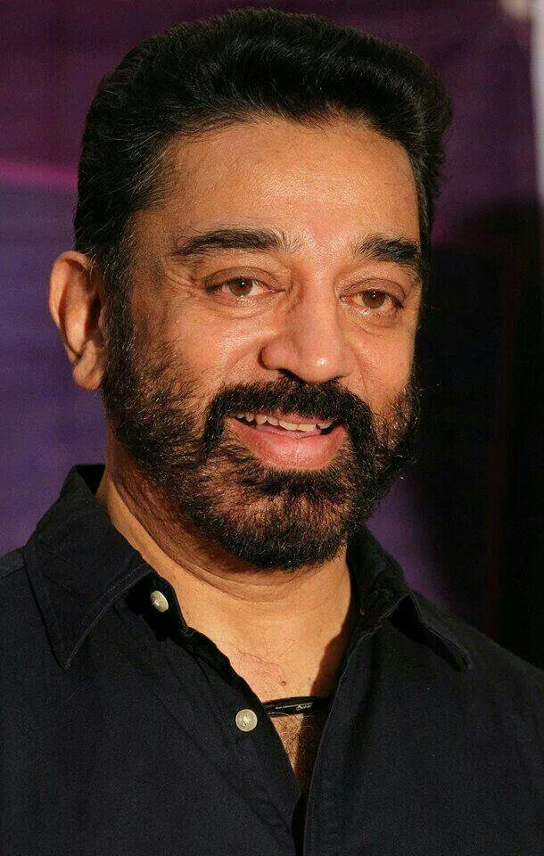

|  |
Kamal Haasan, born on November 7, 1954, is a versatile and highly acclaimed Indian actor, filmmaker, and politician. With a career spanning over six decades, he has acted in over 200 films across multiple languages, including Tamil, Hindi, and Telugu. Known for his dedication to his craft,Kamal is celebrated for his experimental roles and for pushing the boundaries of Indian cinema. His notable films include Nayakan, Indian, Hey Ram, and Vishwaroopam.A recipient of several prestigious awards, including the Padma Bhushan, Kamal Haasan is also an outspoken advocate for social issues and founded a political party. |